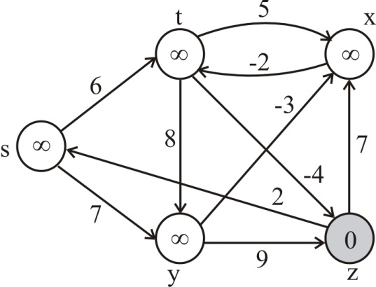
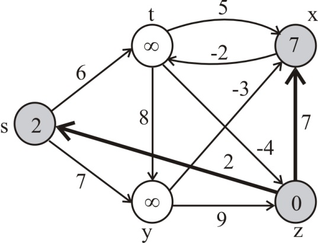
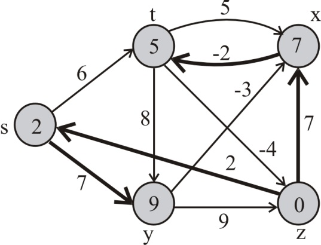
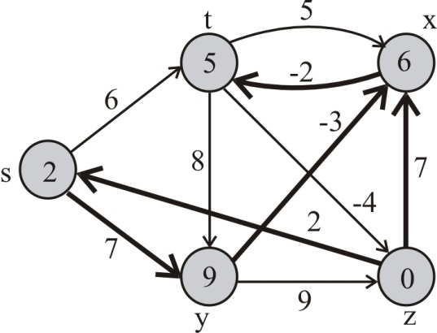
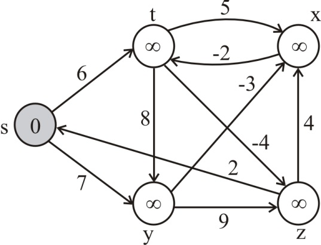
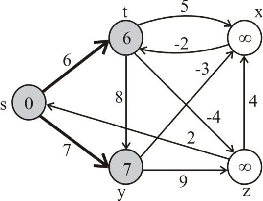
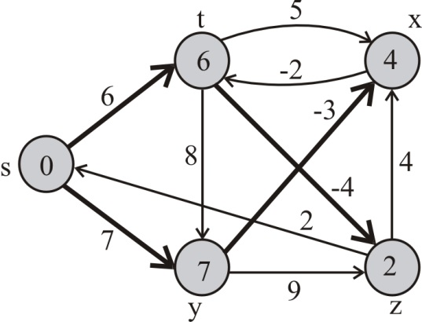
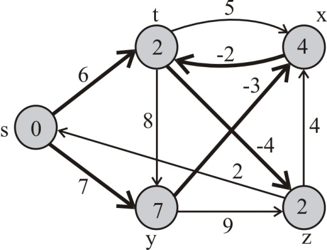
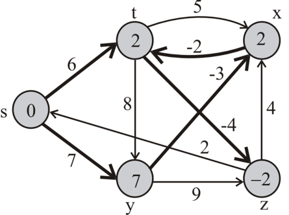

The given directed graph is as follows :

Execute the Bellman-Ford algorithm on the given directed graph as follows:
Since source is vertex z, start with z.
Pass 1 :
For the edge (z,s), s.d is greater than 2+ z.d. Thus, (z,s) is relaxed. Therefore, s.d=2 and s.π=2.
For the edge (z,x), x.d is greater than 7+ z.d. Thus, (z,x) is relaxed. Therefore, s.d=2 and s.π=2.

Pass 2 :
For the edge (s,y), y.d is greater than 7+ s.d. Thus, (s,y) is relaxed. Therefore, y.d=9 and y.π=7.
For the edge (x,t), t.d is greater than -2+ x.d. Thus, (x,t) is relaxed. Therefore, t.d=7-2=5 and t.π=-2.

Pass 3 :
For the edge (y,x), x.d is greater than -3+ y.d. Thus, (y,x) is relaxed. Therefore, x.d=6 and x.π=-3.

Pass 4 :
For the edge (x,t), t.d is greater than -2+ x.d. Thus, (x,t) is relaxed again. Therefore, t.d=6-2=4 and t.π=-2.

Pass 1 :
For the edge (s,y), y.d is greater than 7+ s.d. Thus, (s,y) is relaxed. Therefore, y.d=7 and y.π=7.
For the edge (s,t), t.d is greater than 6+ s.d. Thus, (s,t) is relaxed. Therefore, t.d=6 and t.π=6.

Pass 2 :
For the edge (t,z), z.d is greater than -4+ t.d. Thus, (t,z) is relaxed. Therefore, z.d=2 and z.π=-4.
For the edge (y,x), x.d is greater than -3+ y.d. Thus, (y,x) is relaxed. Therefore, x.d=4 and x.π=-3.

Pass 3 :
For the edge (x,t), t.d is greater than -2+ x.d. Thus, (x,t) is relaxed. Therefore, t.d=4-2=2 and t.π=-2.

Pass 4 :
For the edge (t,z), z.d is greater than -4+ t.d. Thus, (t,z) is relaxed. Therefore, z.d=-4+2=-2 and z.π=-4.

The basic idea is to find a node in negative-weight cycle, to set its weight to -∞ and to run Bellman Ford like procedure on that node, setting the d values of reachable nodes to -∞.
BELLMAN-FORD-MODIFIED(G,w,s)
INITIALIZE-SINGLE-SOURCE(G,s)
for i1 to |G.V|-1
do for each edge (u,v)  G.E
G.E
RELAX (u,v,w)
for each edge (u,v) G.E
do if v.d > u.d + w(u,v)
d.v = - ∞
for each v such that d.v = -∞
do Follow-and-mark-predecessor(v)
Follow-and-mark-predecessor(v)
if π.v!=null and d[π.v]!= -∞
do d[π.v]!= -∞
Follow-and-mark-predecessor (π.v)
else
return
An efficient algorithm to list the vertices of negative-weight cycle is:
BELLMAN-FORD-NEGATIVE-CYCLE (G, w, s)
1. INITIALIZE-SINGLE-SOURCE(G,s)
2. for i=1 to |G.V|-1
3. for each edge(u,v)  G.E
G.E
4. RELAX(u,v,w)
5. for each edge(u,v) G.E
6. if v.d > u.d + w(u,v)
7. mark v
8. x = v
9. while x. is not marked
10. mark x.
11. x = x.
12. return marked nodes
13. return NIL
Call the modified version of DFS and maintain the attribute v.d at every vertex which gives the weight of the unique simple path from s to v in DFS tree. The value of v.d can never be modified once it is set.
Update DFS and if v.d>u.d+w(u,v), then a negative weight cycle exists because u.d+w(u,v)-v.d represents the weight of the cycle which is completed by the back edge in the tree.
The run-time is O(V+E)